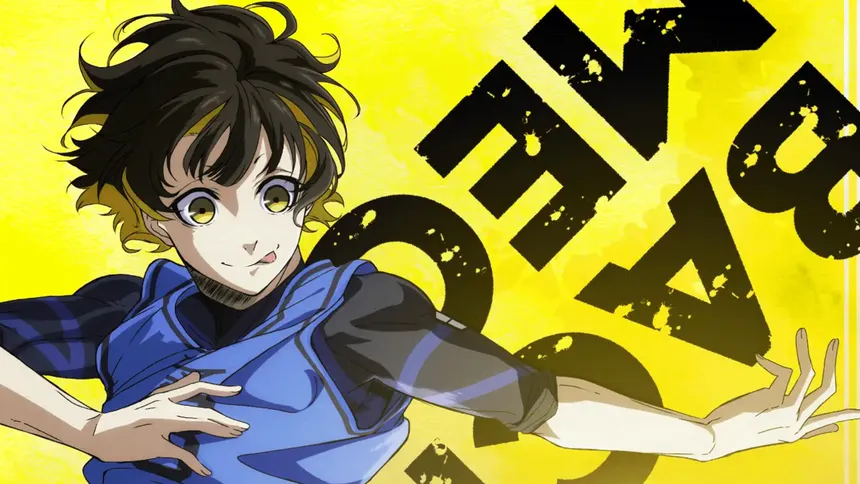
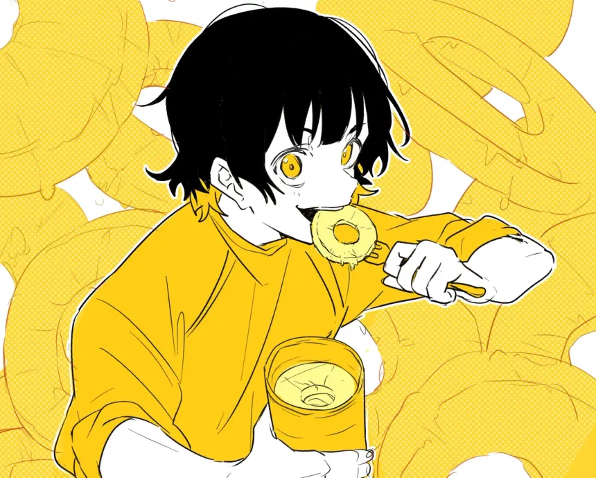
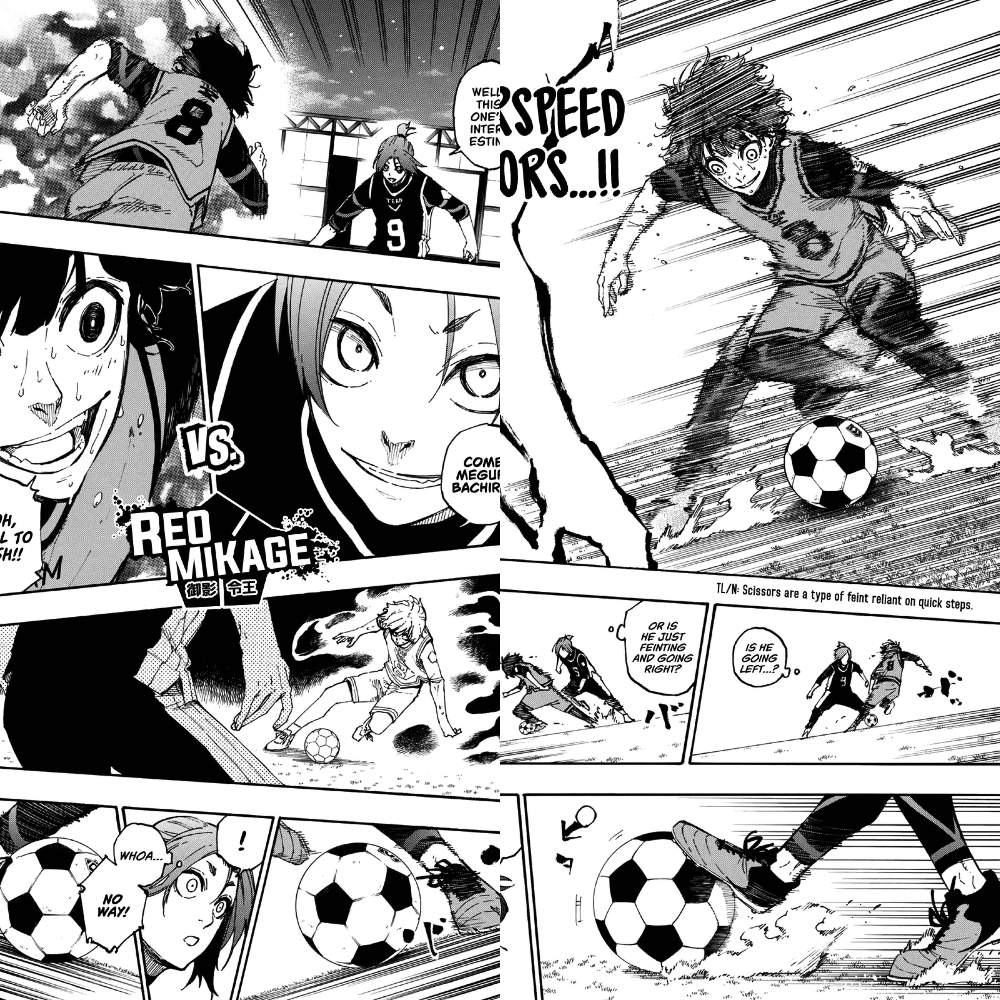
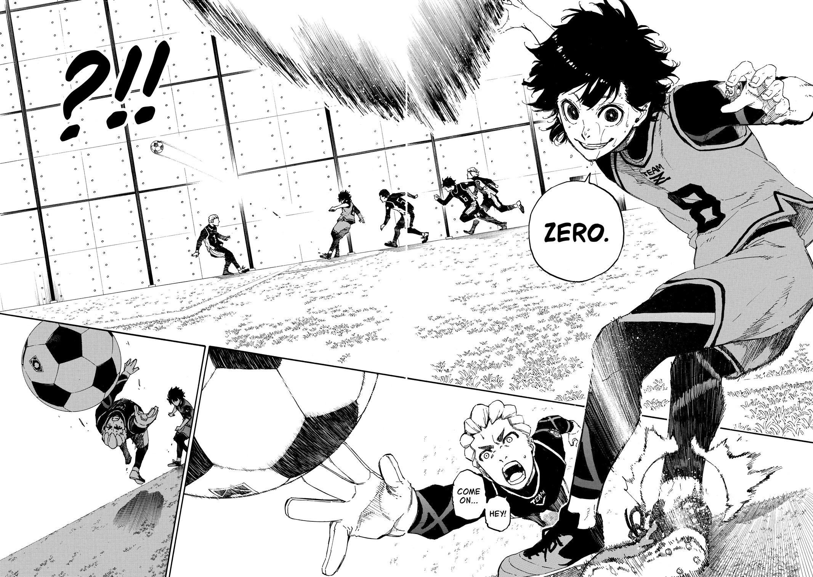
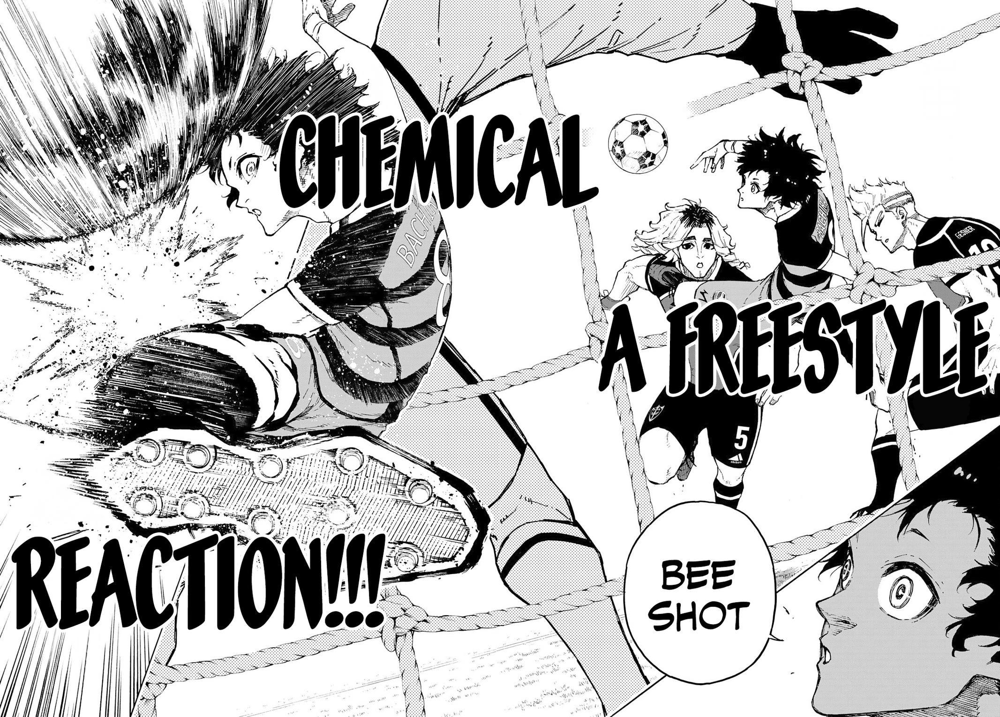
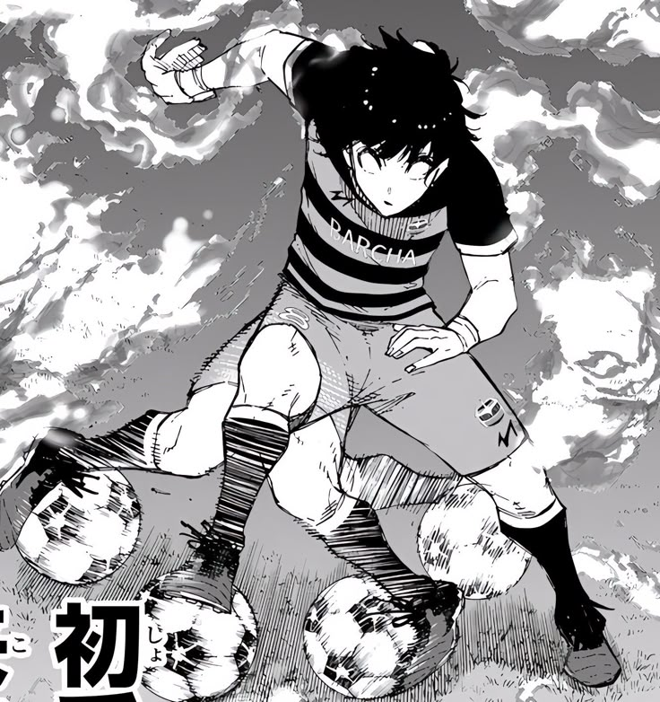
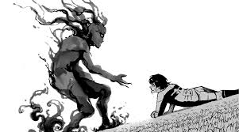

BACHIRA
Information
Information

Bachira is a character from the anime Blue Lock, created by Muneyuki Kaneshiro. Bachira is 17 years old and joined the Blue Lock project in 2018.
Bachira has the unique ability to see a "monster" while playing.
#Roblox #BlueLock
Bachira was born on August 8th in Place of Birth/Hometown, Japan.
Bachira's playing style focuses more on dribbling past players.
Meguru Bachira measures 176 cm
Bachira's mother is named Yu Bachira, and since Meguru was a child, his mother encouraged him to play soccer while she painted her pictures.
Bachira suffered bullying in childhood for being excessively good and eccentric, which generated a deep fear of loneliness. This led him to create an imaginary "monster" as a companion and role model, which he only overcame upon finding worthy rivals like Yoichi Isagi.
he has yellow eyes and black hair with golden highlights. Her blood type is AB, her zodiac sign is Leo, and her childhood team was Namikaze High.
Bachira possesses a unique ability to visualize his opponents' movements as a "dance" or flow of colors. This allows him to predict where the defenders will move before they even decide, enabling him to slip between their legs (the famous "tunnel") with surgical precision, something he describes as getting into the rhythm of their music and then changing the beat.
Unlike many players who automatically enter zones, Bachira learned to consciously summon his Monster. During the match against Ubers, he realized that relying solely on intuition had limits. He began to coldly analyze where his instinct would lead him and then used his refined technique to execute the move, fusing the monster's madness with the logic of a modern attacker, becoming unpredictable even for tactical geniuses like Oliver Aiku.
Dribbling Feat from Chiba to Osaka: In one episode of his summer vacation, Bachira accomplished an extreme challenge that demonstrates his stamina and ball control: he dribbled a soccer ball continuously from his home in Chiba to Osaka (a distance of over 400 km) just to attend an art exhibition by his mother. This feat illustrates not only his tireless technical skill but also his family devotion and constant need to have the ball at his feet, treating the journey as an extension of his training.

He has a particular fascination with eyes, considering them the place where one sees a person's heart most clearly, which explains his interest in rivals with intense "black eyes."
Bachira tends to fall asleep at unexpected times (such as during meetings or meals), wakes up frequently, and, strangely, often appears completely naked after training or matches.
His favorite food is canned pineapple, while he hates mozuku (seaweed). His favorite song is "Yume Ippai" and his favorite manga is Ping Pong.
Playing as a center forward, he plays for FC Barcha in the Neo Egoist League, where his intuitive and creative style fits the team's philosophy of freedom.
He sees Yoichi Isagi as an essential rival in awakening his monster, but also forms friendships with members of Blue Lock, such as Rin, Chigiri, and Kunigami.
If he had 100 million yen, he'd throw the bills off a building or fill his bathtub with money. His mother replaced Santa's gifts with delicious pancakes — a tradition he loves.
Bachira started the Blue Lock project in a low position, ranked 290th. However, his technical development and partnership with Isagi led him to a dramatic rise to 16th place in the Second Selection. At the end of the Neo Egoist League, he ranked 5th overall, securing his place in the Japanese U-20 national team, where he plays as a left midfielder, demonstrating that his creativity is vital even in deeper positions.
One unique curiosity revealed in the Egoist Bible is Bachira's favorite historical figure: the first ape to evolve into a human. He admires this ancestor for making the evolutionary leap, reflecting his own desire for constant evolution in football. His personal motto is an optimistic distortion of the Japanese proverb "Life has joys and sorrows"; for Bachira, the phrase is "Life has fun and also fun," completely ignoring any negative aspects.
The Valentine's Day Record and the Preference for Gifts Despite his charismatic and energetic personality, Bachira revealed that he received zero chocolates on Valentine's Day the previous year. However, this doesn't discourage him; he states that what truly makes him happy is receiving gifts of any kind, valuing the gesture and the freedom to receive more than the object itself. For him, the real sadness isn't the lack of chocolates, but rather having his freedom taken away.
Here you can see what Meguru Bachira will look like on Egoist Curiosity.

Cooldown: 15
Variants: 2
Type: Dribble
Description:
Variant 1 with the ball: A series of consecutive stepover dribbles for 2 seconds, guaranteeing iframes without much progress.
Variation 2 without the ball: Control in the air followed by a long dash.

Cooldown: 19
Variants: 3
Type: Shoot/Dribble
Description:
Variant 1 with the ball: High, soft shot. Predictable.
Variant 2 QTE: You feint the kick, but perform a heel flick and quickly move forward. It's a Vulnerable move.
Variant 3 without the ball: Bee Shot

Cooldown: 23
Variants: 2
Type: Dribble / Ultimate: Shot
Description:
Variant 1 without Ultimate: It will stun the nearest player and have a dribble effect, giving an ankle break to anyone who tackles during the windup. It then performs a heel flick.
Variant 2 with Ultimate: Turns into a cutscene with a kick.

Cooldown: 25
Variants: 1
Type: Counter
Description:
Variant 1 with the ball: You will make a pose with iframes, which will last 1 second, and if you get tackled or robbed during that time, you will perform a nutmeg that will stun everyone on the field for half a second.
Basic: Nil
In Special:
Bottom Kick Trick
In Flow: Nil

Dribble Distance +20v
Monster Trance Buff
Monster Trick v1 Buff
Nutmeg will be executed regardless of steals, if there is at least 1 person from the opposing team within 5 studs.
Dribble Duration +0.1s